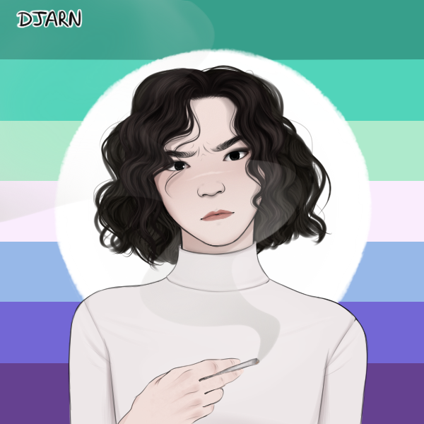
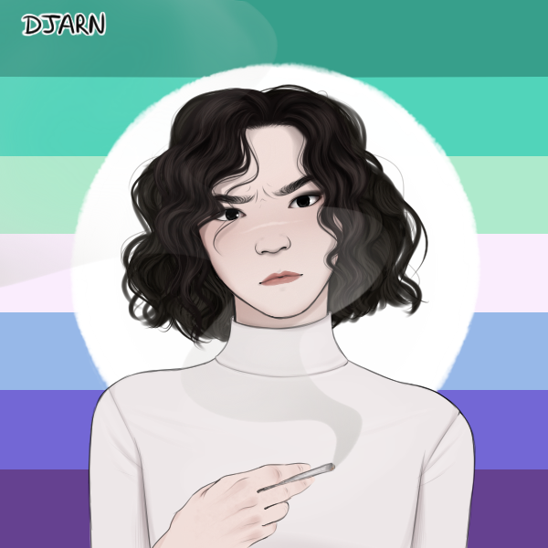
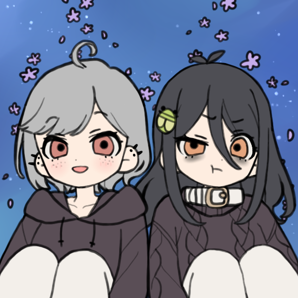
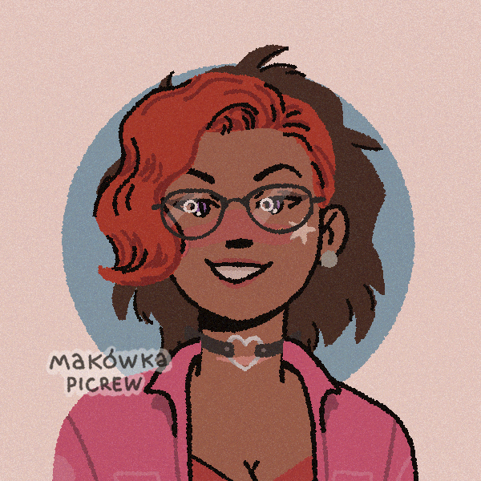
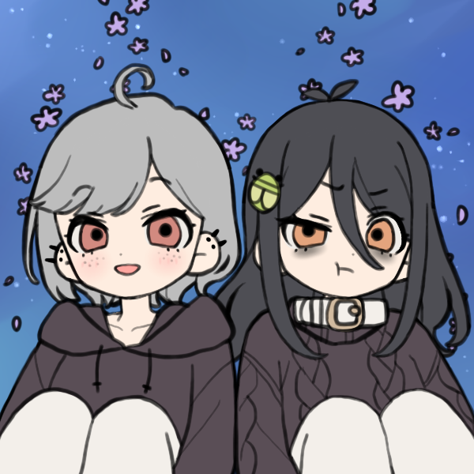
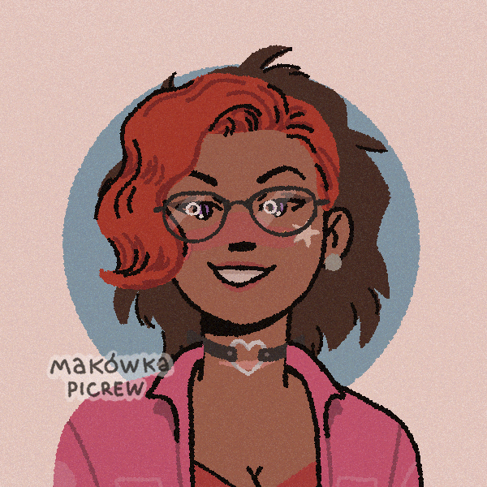

Gamedev Retrospective
I haven’t shared on here in a while, though it’s mostly because Hakyll won’t compile on my work laptop, mostly. The other reason is that blogging is a surreal experience for me, especially when I don’t know my audience. I have literally no idea who you are, or why you would be stalking this blog.
But from past experience, the highest probability is that you’re literally stalking me.
The second highest probability is that you’re someone I left a neat impression on and you wanted to find out more about the weirdo in makeup that you met at a party last weekend.
And I truly in my heart of hearts believe that the lowest probability is that you’re actually here for the content.
Maybe it’s hard for me to accept that anyone would actually like anything that I create. Even though I seem to consistently be proven wrong on that notion, it still surprises me every time.
Speaking of people liking something I’ve made, I put of a short clip on social media, which I for the most part have successfully avoided for the majority of the last year, and… people seemed to like it. Enough for it to go viral. I mean my social media followers have more than doubled from that one post.
It was this one btw:
Bam. Content. Feeling content.
Also so much roleplaying this year. I met these hella sweet kids and we roleplay character shit. Fun stuff. Good therapy too. Really got to know myself by being not myself.
Some of my characters:

 
 


  
 
Other than that, progress has started back up on my Gamedev project: Overworld. Here’s some in-game aesthetics showoff:
It’s a video! Watch it!
Also working on a couple top secret art projects for burns. Super excited to talk about them, but not yet! Soonish for sure.